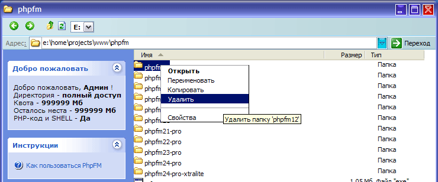

Что такое PhpFM?
Как его установить?
Как пользоваться PhpFM?
Копирование файлов и папок
Изменение прав (CHMOD) на файлы
Закачка файлов и папок
Устранение проблем
Какие браузеры оффициально поддерживаются PhpFM?
Какие требования к хостингу?
У меня не появляются окна «Дополнительно», «Поиск» и «Администрирование»
Что такое PhpFM?
PhpFM (Php File Manager) - это новый HTTP-файловый менеджер, который позволяет управлять Вашими файлами прямо из браузера.
PhpFM внешне очень напоминает обычный Проводник, и очень похож на него по функциям. PhpFM можно использовать, когда необходимо
быстро подправить какой-нибудь файл, скопировать директорию, и т.д. При этом, он обеспечивает полноценную работу с файловой системой сервера,
и может быть использовать например из интернет-кафе для управления своим сайтом. Благодаря поддержке нескольких пользователей, вы можете
например дать доступ человеку к какой-то определенной папке сервера, и ограничивать размер занимаемых файлов.
Как его установить?
Для того, чтобы установить PhpFM, необходимо лишь скопировать все файлы из архива на сервер в нужную Вам папку, и зайти в неё.
Замечание: если Вы не хотите копировать такое большое количество файлов, Вы можете не копировать изображения с префиксом file-, кроме файла file-.png (для корректного отображения значков файлов), например файлы file-php.png, file-txt.png, и т.д.
Например: файлы на сервере хранятся в папке public_html, соотвественно, нужно распаковать архив, и скопировать все его содержимое в папку phpfm,
и зайти по http://ваш_сайт/phpfm/ в файловый менеджер.
Внимание! для того, чтобы сменить пароль администратора, необходимо открыть файл check.pl и поменять там пароль на нужный Вам.
Как пользоваться PhpFM?
В форме ввода логина и пароля введите Ваши авторизационные данные (по всей видимости, Вы это уже сделали...), и увидите примерно такое окно:

Есть 2 разных способа управлять файлами - клавиатурой и мышью.
Клавиатура:
- Стрелочки (вверх и вниз) - выделяют файл или папку
- Delete - удаляет файл или папку
- Enter - открывает папку или открывает файл для редактирования
- F2 - переименовывает файл
- Alt+Enter - открывает свойства файла или папки
- Backspace (клавиша «стереть») - вверх на один уровень
При зажатой Ctrl или Shift можно выделять несколько файлов
Мышь:
- Нажатие левой клавишей на файл - выделение файла
- Нажатие правой клавишей - появление контекстного меню
Удерживая Shift или Ctrl, можно выделять несколько файлов
Копирование файлов и папок
Копировать файлы с помощью клавиатуры нельзя, поэтому рассматривается только случай с управлением мышью:
1) Выделяем нужный файл или папку, или сразу группу файлов
2) Нажимаем правой клавишей мыши на один из выделенных файлов или папок (главное не промахнуться)
3) В появившемся меню выбираем «копировать»
4) После этого заходим в нужную директорию, и нажимаем на правую клавишу мыши (так, чтобы не выделить файл или папку)
5) В появившемся меню выбираем «вставить», или «отменить», для отмены копирования
6) Все, файлы скопированы.
Изменение прав (CHMOD) на файлы
Есть несколько способов это сделать:
1) Нажмите правой клавишей на нужный Вам файл и выберите «Свойства». В открывшемся окне Вы можете изменить права файла.
2) Нажмите на ссылку «Дополнительно», и найдите заголовок «CHMOD». В этой форме вы можете также изменить права файла.
Закачка файлов и папок
Для закачки файлов:
Нажмите на ссылку «Дополнительно», найдите заголовок «Закачка файлов». За один раз Вы можете закачать не более 6 файлов, общим размером не более 8 мегабайт (по умолчанию), и размер каждого из них не должен превышать 2 мегабайта (по умолчанию, смотрите более точные цифры в комментариях к закачке файлов)
Для закачки папок (без подпапок) или больших файлов смотрите файл README.txt, прилагающийся к PhpFM
Устранение проблем
Какие браузеры оффициально поддерживаются PhpFM?
Изначально поддерживался только Microsoft Internet Explorer, остальные браузеры поддерживались лишь частично.
Сейчас оффициально поддерживаются 2 браузера - Internet Explorer и Mozilla (aka Netscape). Все базовые функции работают в этих браузерах (в Internet Explorer также корректно поддерживается плавное всплытие контекстного меню и выделение нескольких элементов мышью).
Крайне не рекомендуется использовать браузер Opera, т.к. в нем очень посредственная реализация JavaScript, и соответственно, в этом
браузере поддерживается лишь небольшая часть возможностей PhpFM.
Какие требования к хостингу?
PhpFM должен работать на большинстве бесплатных хостингов (например на fatal.ru по причине некорректной настройки сервера он не работает), при выставлении соотвествующих прав для PHP-файлов.
На платных хостингах PhpFM работает везде - проверялось на Peterhost, 100mb.net и ряде других хостеров.
У меня не появляются окна «Дополнительно», «Поиск» и «Администрирование»
В некоторых браузерах (например в Internet Explorer Service Pack 2) открытие документов в новом окне блокируется. Для Internet Explorer например необходимо нажать на желтую полоску вверху и выбрать «всегда разрешать открытие новых окон для данного узла», или что-то похожее.